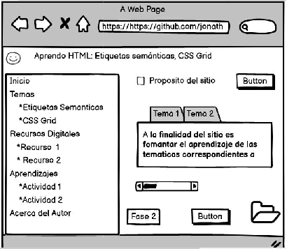

proposito del Sitio:
La finalidad del sitio es fomantar el aprendizaje de las tematicas correspondientes a las
"Etiquetas semánticas, CSS Grid" para apropiarnos del aprendizajhe del curso diseño de sitios web del programa de ingenieria de sistemas, atras vez de explorar el curso y el diseño de uma pagina html
Tema 1
(Etiquetas semánticas)
Las etiquetas semánticas ayudan a definir la estructura del documento y permiten que las páginas web sean mejor indexadas por los buscadores. Una etiqueta se califica como semántica si tiene que ver el significado, es decir, si nos informa sobre lo que trata su contenido.

Tema 2
(CSS Grid)
El CSS grid se puede utilizar para lograr muchos diseños diferentes. También se destaca por permitir dividir una página en áreas o regiones principales, por definir la relación en términos de tamaño, posición y capas entre partes de un control construido a partir de primitivas HTML

Mockups:
